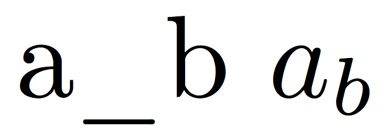
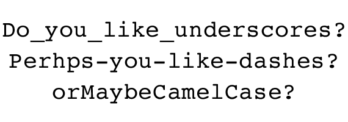

¿Les ha pasado que están super inspirados escriiendo código pero repentinamente necesitan una luz divina que les diga qué nombre ponerle a la variable que están a punto de escribir?
Como Fronted hay tantas cosas que debo nombrar en mi día a día: clases para cada elemento HTML variables en Stylus que puedan ser reutilizables, componentes, archivos,funciones... Tengo que poner a volar mi imaginación para poder lograrlo.
A pesar de que es algo que depende totalmente de nosotos y no hya forma estrictamente correcta o incorrecta de hacerlo, nombrar cada elemento es un trabajo en el que debemo poner empeño pues se verá impactado en la la organización y mantenibilidad de nuestro código.
Fanny es parte del Team Platzi si quieres una carrear en Frontend, empieza por el Curso de Desarrollo Web y luego el Curso de Responsive Design.
Lo más importante es que el nombre que le asignes siempre refleje el trabajo que se están haciendo, de eta forma podemos incluso reducir la necesidad de comentar cada línea de código con funcionamiento.
A continuacion algunos conesejos que hay que seguir para evitar algún desastre a la hora de nombrar un elemento en tu código.
Abreviar nombres puede que en algunos casos no sea tan buena idea. Seguramente con el pasar del tiempo o cuando un nuevo desarrolador tenga que darle mantenimiento a tu código habrá quedado en el olvido lo que esa variable representa. Lo ideal es utilizar nombres que describan la funcionabilidad de nuestro código.
Por ejemplo, es mucho más desriptivo escribir:
Que:
Generalmente los lenguajes de programación no permiten espacios en las variables. Sin embargo hay distintos métodos para separar el conjunto de palabras que conforman una variable y que de esta manera logren ser más legibles. Esto se puede hacer capitalizando cada palabra agrupada(camelCase) o separando cada palabra con underscore (snake_case).e_case).
Por ejemplo
o
